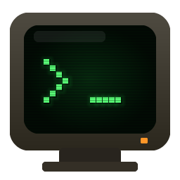

Emulador de terminal para Windows com efeitos de monitor CRT antigo.
ConPTY + xterm.js para a emulação · WebGL2 para os efeitos.
Inspirado no cool-retro-term, de Filippo Scognamiglio.
Este programa é software livre: você pode redistribuí-lo e/ou modificá-lo sob os termos da GNU General Public License, versão 3 ou posterior. É distribuído SEM NENHUMA GARANTIA.